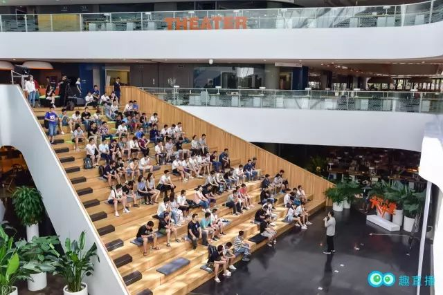

趣直播创业心得分享 | 原创

前不久趣直播举办了一场技术人成长交流会，趣直播CEO李智维给我们分享了他的创业心得。以下是视频：
以下是文字版：
我们是怎么创立这个平台？
趣直播想做什么？
今天想跟大家分享一下，
趣直播过去的故事。

锤子手机发布会都搞得特别盛大对吧？
当时年轻不懂事情，我就自己搭建了一个直播平台，然后在朋友圈里宣传。这就是趣直播的首次发布。
发布过程中有还一个小插曲。当时我们的宣传语是“首个知识性直播平台”，很多人包括虾神在内，都看成了“首个性知识直播平台”。
我一直在思考，我要做些什么？
一无所有的我，做什么是最容易成功的呢？

我思考了很久，我既然认识叶顾成、唐巧这些大咖，能不能做一个直播平台，请他们来做分享呢？
先做出一个有人用的平台，这是我最初的想法。
那就做一个直播平台吧。平台上前后端代码的编译和产品上线，都是我一个人完成。前端和后端知识很多都是在 codereview 与孤城合作时学到的，正好派上用场了。
如果你擅长很多技能，那么你做一件事情就会没有约束。

平台刚刚创立的时候，没有人气也没有主播。跟很多程序员一样，我做事很独立，遇到问题都是自己解决。没有主播，那就自己播。
后来认识了宜龙，也就是我前同事。宜龙来公司比我晚，我经常会去帮助他，他有时也会帮帮我，慢慢的我们就变成了好朋友。我有时也会去蹭宜龙的饭局。通过身边的牛人朋友，去蹭他们的饭局，可以结识更多的牛人。

大家的时间都是有限的，所以尽可能把时间花在和牛人的相处上，因为这些人对我的帮助可能更大。
后来有幸邀请到宪华，孤城这些大牛来我们平台做直播，渐渐的平台有了一些名气。你会发现如果你做的比较垂直的话，邀请嘉宾也会变得简单，可以邀请到技术圈里不同领域的大牛，比如说陈刚，覃超，喵神。
创业这条路走下来，感触最深的是，做事不够勇敢。

比如说喵神、巧哥，早在宜龙直播之后，我就可以邀请到他们了，毕竟他们很多朋友都在我们平台上直播过。但我一直觉得，自己没有和他们聊过天，怕被拒绝或者直接无视我，一直处在这种恐惧之中，迟迟不敢主动找他们，而是选择一些影响力没有他们高的主播。
后来公司一度处于亏损状态，回家过年时，身上的几百块都是爸爸给我的。姐姐埋怨我说，你都这么大了，理应给长辈和晚辈发红包，但是你在外面创业，身无分文，连红包都发不起。
那是我最伤心难过的时候。男人的委屈都是被这些事情撑大的。
回到北京以后，我开始变得勇敢了，更加主动去邀请各种大 V 来我们平台做直播。要知道，邀请他们做主播，并不是说他们坏话，更不是黑他，而且大 V 们本来就是乐于分享的，所以根本不需要害怕，积极主动与他们交流就好。
事实也是如此，就是凭着这股冲劲，先后邀请到了巧哥、喵神、Sunny来我们平台做直播，当月平台就实现了盈利。
每一次都是真正把自己逼到绝境，你才会去跟自己身上的弱点，那些人性的弱点去斗争。

后来我给叶老板推荐了一个技术负责人，那个人能力很强，帮他解决了一个很大的难题。叶老板看到我们的平台有盈利，知识付费行业也有前景，因此给了我们一笔投资。
所以你得自己先做出成绩来。当你对别人有价值，他们才会投资你。比如说你的年薪是200万，那么你去拿一个200万的融资，也是比较容易的。毕竟你的能力就摆在那里。
拿到融资之后，下一步该怎么做，如何管理好团队，是我接下来要考虑的问题和面临的挑战。
以上就是趣直播的故事，也是我的创业心得。
谢谢大家！